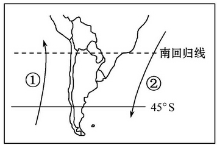
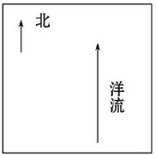
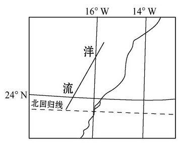
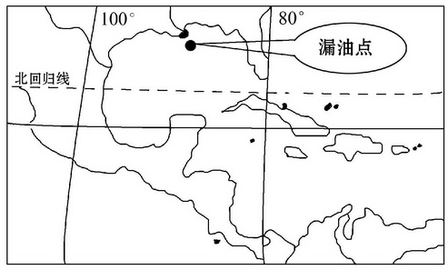

None - Fade - Slide - Convex - Concave - Zoom
选择班级
幻灯片样式
Black (default) -
White -
League -
Sky -
Beige -
Simple
Serif -
Blood -
Night -
Moon -
Solarized
1．促使高低纬海域热量交换的主要因素是( )
A．径流
B．波浪
C．潮汐
D．洋流
下图为南美洲南部沿岸洋流示意图。读图回答2、3题。
2．关于图中①②两股洋流的说法，正确的是( )
A.均为暖流
B.均为寒流
C.①是暖流，②是寒流
D.①是寒流，②是暖流
3．图中洋流对地理环境的影响有( )
A.①洋流为风海流
B.②洋流随季节不同方向相反
C.①洋流是秘鲁渔场的重要成因
D.②洋流不利于海洋污染物的扩散
读下图(世界海洋多雾海区分布图)，回答4、5题。
4．下列关于图中多雾海区说法正确的是( )
A．多雾海区均为暖流流经的地区
B．与多雾海区相邻的陆地上均为草原
C．多雾海区均为信风盛行的大陆西岸地区
D．多雾海区多为寒流流经的地区
5．关于图中六海区雾的共同成因，说法正确的是( )
A．表层海水温度较低，使其上空大气的水汽容易凝结成雾
B．有冷空气从温暖的洋面上吹过
C．锋面频繁过境，使其上空出现逆温层所致
D．受高压系统影响，晴朗少云，大气逆辐射弱
6．读材料及图，回答下列问题。 材料 2010年6月30日，中国海军第六批护航编队赴亚丁湾、索马里海域执行护航任务。下图为中国海军舰艇编队航线示意图。
(1)舰艇经过马六甲海峡时，风浪较[小](大或小)，其主要原因是[位于赤道无风带]。
(2)经过亚丁湾、索马里海域的航线，运输的主要资源是[石油] 世界上该物资的最大输出地是[中东]，若该物资在夏季运输时发生泄漏，则向[东]方向扩散的速度较快。
(3)图中正确表示该季节洋流流向的是[B](A、B)，从利于航行的角度看，舰队应如何选择时间?
冬季出航，夏季返航。
读洋流流向示意图，回答1、2题。
1．若该洋流是一支暖流，则其可能位于( )
A．北半球中低纬度的大陆东岸
B．北半球中高纬度的大洋西岸
C．南半球中低纬度的大陆西岸
D．南半球中低纬度的大洋西岸
2．若沿该洋流前进的方向，表层海水水温不断增高，则该洋流( )
A．对沿岸气候有增温增湿的作用
B．流经撒哈拉沙漠的西部沿海地区
C．是因信风吹拂而形成的风海流
D．流经海区可能有世界著名的渔场
读下图，回答3、4题。
3．图中洋流所在的大洋为 ( )
A．太平洋
B．大西洋
C．印度洋
D．北冰洋
4．图中洋流对相邻陆地环境的影响是( )
A．增加了湿、热程度
B．降低了干、热程度
C．减轻了寒冷状况
D．加剧了干燥状况
(2011·无锡模拟)2010年4月20日，墨西哥湾发生漏油事件，造成严重海洋污染，有关专家担心浮油可能“侵入”大西洋，甚至漂向欧洲沿海，读墨西哥湾海域示意图，回答5、6题。
5.可能使浮油“侵入”大西洋，漂向欧洲沿海的洋流是( ) ①墨西哥湾暖流 ②阿拉斯加暖流 ③加利福尼亚寒流 ④北大西洋暖流
A.①③
B.①④
C.②③
D.②④
6.石油污染对墨西哥湾沿岸产生的影响有( ) ①引发赤潮 ②旅游业遭受打击 ③降水增多 ④破坏海洋生态系统
A.①③
B.①④
C.②③
D.②④
7.当地中海沿岸地区进入雨季时，自东向西穿过北印度洋海区的航船则( )
A.顺风顺水
B.逆风逆水
C.顺风逆水
D.逆风顺水
8.(探究性学习)根据材料，完成下列问题。 (22分) 探究非洲西海岸洋流形成及对环境的影响
(1)结合表，描述沿19°S水温的分布规律。
离海岸距离越远，海水表面的温度越高。
(2)该地区位于赤道低气压带与副热带高气压带之间,受盛行风的影响,海水会发生运动，在图甲上画出该海域海水水平运动和垂直运动的示意图。
(3)根据前面的探究，判断该洋流的性质为[寒流]，并在图乙上，画出该洋流的流动方向。
(4)分析该洋流对沿岸气候及海洋生物资源的分布有何影响。
寒流降温减湿，使热带沙漠气候向低纬延伸；上升流使鱼类饵料丰富，吸引鱼类形成大渔场。